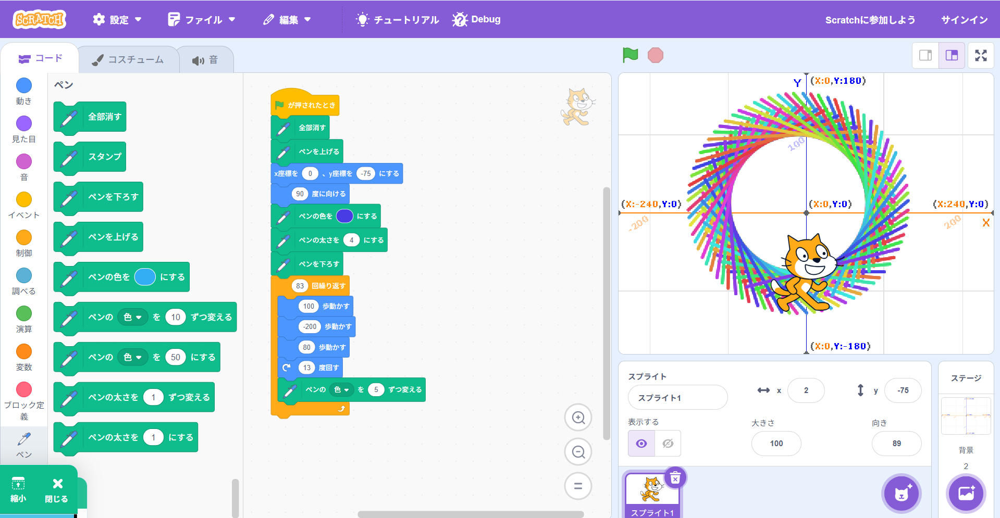

1-1 サイエンスアート

1.内容
「ペンを下ろす」の後に「Ｘ歩動かす」と「Ｙ度回す」を組み合わせで何度も繰り返すことで、円を描くことができる。
また、「Ｘ歩動かす、－２Ｘ歩動かす、Ｘ歩動かす、Ｙ度回す」とすることで、直線を書くことができ、Ｙ度ずつ回っているので線の中心を通る円のような図になる。
2.感想
角度や歩数を変えるだけで、全く違う絵ができるので個性が出て面白いと思いました。また、数字の微調節も大切だと思いました。
例えば、角度を大きくすると線同士の感覚が広く、線の本数が減り、角度を小さくすると線同士の感覚が狭まり、線の本数が増えることです。